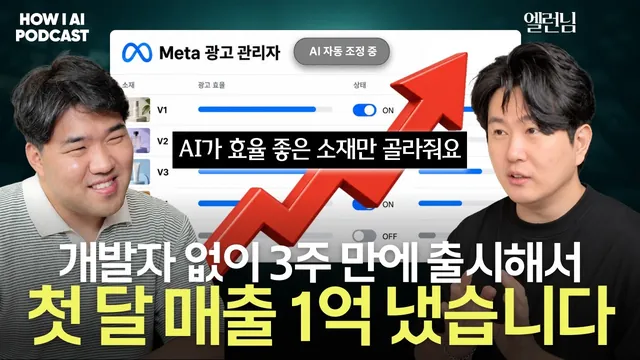

월 1억 광고비를 AI가 굴립니다, 하루 10개 소재 만들고 1시간마다 끄고 켜는 방법 (퍼널랩스 엘런님)

원본 영상 보기 →
- AI 광고 운영은 "규칙 + 판단 기준"이 만든다
- 사람 검수를 줄이는 대신 손실 상한을 설계한다
- 경쟁이 늘수록 전환율이 곧 광고 여력이다
한 줄 요약
퍼널랩스(Funnel Labs) 앨런(추진호) 대표는 월 약 1억 원의 광고비 집행을 AI에게 맡기고, 7년간 쌓은 세일즈 노하우를 규칙으로 넣어 두었다. 영상은 그 자동화 구조와, "고객이 어떤 마음일지 상상하는 힘"이라는 파는 기술을 함께 다룬다.
전체 내용 정리
클로드 코드로 3주 만에 사주 서비스를 내놓고 첫 한 달에 1억 원을 벌었다
앨런 대표는 커머스 회사를 함께 창업한 친구에게 넘기고, 11월부터 오래 일해 온 팀원들과 새로 시작했다. 팀은 일하는 방식을 무조건 클로드 코드(Claude Code)로만 하기로 정했고, 그렇게 3주 만에 사주를 AI가 분석해 고객에게 보여주는 서비스를 내놨다. IT 전문가도 웹 서비스 운영 경험자도 팀에 없었기 때문에, 오래 배우기보다 먼저 만들어 팔아 보고 안 팔리면 이유를 고민하자는 쪽을 택했다. 12월 중순 런칭 후 둘째 날에 광고비 약 30만 원을 썼는데 매출은 약 100만 원이 나왔고, 1월 중순까지 30일 동안 매출은 약 1억 원에 이르렀다.
2월에 매출이 갑자기 꺼졌고, 답은 경쟁이 아니라 전환율이었다
2월이 되자 똑같이 광고를 돌리는데도 매출이 나오지 않았다. 일주일 동안 원인을 분석해 보니 사주 서비스를 하는 경쟁자들의 광고 개수가 3개월 전보다 네다섯 배로 늘어 있었다. 고객 수는 그대로인데 경쟁자가 늘어 고객이 다른 곳으로 간 것이다. 앨런 대표는 상품을 더 매력적으로 만들고 세일즈를 잘해서 전환율을 올리는 쪽으로 대응했다. 100명이 들어왔을 때 남들이 5개를 팔 때 자신이 8~10개를 팔면, 남들이 광고비 100만 원으로 매출 100만 원을 낼 때 160~200만 원을 내므로 남들이 접는 광고도 수익이 난다는 논리다.
광고 운영은 마케팅팀이 하던 일을 규칙으로 만들어 AI에게 넘긴 것이다
AI는 하루에 두 번 돌면서 광고 소재를 5개씩, 하루 총 10개 정도 만든다. 아침 9시 30분쯤에는 기존에 돌던 소재 중 효율이 좋은 것을 골라 소구점(광고가 건드리는 고객의 마음)이 비슷한 변형 소재를 만들어 등록한다. 11시쯤에는 경쟁 서비스의 광고를 리서치해 우리가 해보지 않은 소구점과 컨셉을 찾고, 그걸로 카피와 소재를 만들어 새로 등록한다. 그 사이 한 시간마다 효율이 나쁜 소재는 끄고 잘 나오는 소재는 광고비를 늘리며, 다음 날에는 살아남은 소재만 다시 변형해 만든다. 원래 퍼포먼스 마케팅팀 2~3명이 하던 분석과 소재 제작을 AI가 하는 셈이고, 앨런 대표는 이걸 "규칙만 만들어 놓은 것"이라고 말한다.
소재를 매일 바꾸는 이유는 같은 광고가 갈수록 효율이 떨어지기 때문이다
광고 매체는 처음에 가장 관심이 많은 사람에게 광고를 보여주고, 같은 소재를 계속 쓰면 점점 관심이 덜한 사람이나 이미 본 사람에게 보여줄 수밖에 없다. 그래서 광고비 1만 원에 매출 2~3만 원이 나오던 소재도 2만 5천 원, 2만 원, 1만 5천 원으로 떨어진다. 다시 2~3만 원이 나오는 소재를 계속 찾아야 하는데, 이 일이 원래 사람의 시간을 가장 많이 잡아먹었다. 이 하락을 사람이 아니라 시스템이 막게 한 것이다. 소재를 만드는 것부터 등록, 끄는 것까지 사람이 승인하는 화면(UI) 자체가 없다. 처음 일주일 정도 사람이 확인하며 문제가 없음을 본 뒤로는 보지 않는데, 새 소재 20개 중 19개 이상은 문제가 없고 문제가 있어도 광고비를 1만 원쯤 쓴 뒤 효율이 안 나오면 어차피 꺼지도록 되어 있기 때문이다.
AI가 잘하려면 광고비 100억 넘게 쓰며 쌓은 판단 기준을 넣어야 한다
AI에게 그냥 시키면 효율이 나오기 어렵다. 그래서 앨런 대표는 새 소구점을 어떤 기준과 관점으로 고를지, 카피를 어떻게 쓰고 판매와 랜딩 페이지를 어떻게 연결할지 같은 인하우스 팀의 안목과 노하우를 넣어 두었다. 영상에서는 세일즈 노하우를 넣은 GPTs와 일반 GPT에 "20대 남자 고객에게 잘 팔릴 사주 앱 카피"를 똑같이 시켜 비교했다. 일반 GPT는 뻔한 영업사원 같은 멘트를 내놓았고, GPTs는 "내 인생 지금 제대로 가고 있는 걸까?"라는 질문으로 시작해 궁금한 것부터 바로 확인하도록 행동을 유도했다. 이유를 물으니 무료 사주를 본 뒤 유료 사주를 구매할 사람을 겨냥해, 결정하기 어려운 고민에 공감하는 사람이 통과하도록 좁혔다고 답했다. 랜딩 페이지도 웹툰형으로 V1, V2, V19처럼 100개가 넘는 버전이 있고, 버전마다 결과 화면의 캐릭터와 말투가 달라 유입 경로별로 어떤 캐릭터에서 결제가 잘 나오는지 AB 테스트를 한다. 경쟁사 광고는 메타 광고 라이브러리(Meta Ad Library)에서 키워드별로 모아 분석하고, 우리에게 없던 광고를 찾아 무엇을 만들지 목록으로 정한다.
파는 기술은 결국 고객이 어떤 마음일지 상상하는 힘이다
앨런 대표는 20대 때 약 10년간 전화 영업을 하며 대본을 수천 개 썼고, 글자 색이나 굵기를 바꿔 가며 어디서 고객이 지루해하는지 계속 실험했다. 그 경험이 랜딩 페이지 설계와 같은 로직이라 감각이 빨랐다고 한다. 창업 초기에 자본금이 50만 원 남았을 때 광고로 첫 달 매출 500만 원을 냈고, 6개월쯤 뒤에는 월 매출이 1억 5천~6천만 원까지 올랐다. 이런 감각이 있으면 커피 브랜드 100개를 전부 테스트하지 않고 유명한 3~4개부터 시도해 5번 안에 답을 찾을 수 있어, 이틀에 한 번 바꿔도 길어야 10일 안에 효율을 찾는다고 본다. 사주 컨셉 실험에서도 같은 원리가 보였다. 특별한 기질이 있는데 그걸 누르는 게 있다고 하고 자세한 풀이를 유료로 넘기는 방식은 효율이 좋았고, 계절로 풀이하는 방식은 남과 다르다는 느낌이 안 들어 처음부터 안 됐다.
AI로 시간을 벌고, 그 시간을 돈 버는 고민에 써야 한다
하루 8시간 중 7시간을 광고 운영이나 문서 작업처럼 내가 더 열심히 해도 매출이 안 오르는 일에 쓰고 있다면, 그건 AI에게 맡기고 1시간을 플러스알파를 만드는 고민에 쓰게 해준다는 것이다. 다만 앨런 대표는 돈은 대표가 벌어와야 하고 AI에게 "알아서 벌어와"라고 하는 건 비현실적이라고 본다. 대신 인건비 100만 원이 드는데 매출이 50만 원인 일도 AI로 1~2만 원에 제공할 수 있다면 원래 불가능했던 사업이 된다. 사주 리포트 100페이지를 3만 원에 파는 것이 그 사례다. 그는 AI가 발전할수록 제품 만들기는 쉬워지고 경쟁자가 늘어, 언젠가 광고비 100만 원으로 그 이상을 벌기 어려워지므로 한번 온 고객이 계속 쓰는 서비스만 살아남을 것이라고 예상한다.
파는 능력을 키우려면 6개월 만들지 말고 최소 제품으로 고객부터 만나라
앨런 대표의 세일즈 퍼널 강의를 한 문장으로 줄이면 "어떻게 하면 내 제품을 사고 싶게 만들까"이고, 이걸 세 달 배워도 힘든 만큼 가이드 없이 하면 시간이 더 걸린다. 격투기를 처음 하는 사람이 첫 스파링에서 졌다고 재능이 없다고 하지 않듯, 처음엔 질 수밖에 없다는 전제로 시작하라고 말한다. 서비스를 6개월, 1년 만들지 말고 MVP(최소 기능 제품)라도 빨리 만들어 고객부터 모으라는 조언이다. 고객이 어떻게 행동하는지 관찰할 지점을 최대한 많이 만들고, 그 횟수를 늘릴 액션 플랜을 세우면 어떻게 해야 할지가 저절로 보인다고 한다.
핵심 인사이트
- AI 광고 운영은 "규칙 + 판단 기준"이 만든다: 소재 생성, 등록, 끄기와 증액을 자동으로 돌려도 성과가 나는 건, 광고비 100억 넘게 쓴 경험에서 나온 판단 기준을 AI에게 넣었기 때문이다. 도구보다 넣을 노하우가 성패를 가른다.
- 사람 검수를 줄이는 대신 손실 상한을 설계한다: 새 소재는 광고비 1만 원쯤 쓰고 효율이 안 나오면 꺼지게 해서, 사람이 일일이 안 봐도 손실이 작게 유지된다. 검수 대신 안전장치를 두는 방식이다.
- 경쟁이 늘수록 전환율이 곧 광고 여력이다: 2월에 경쟁 광고가 네다섯 배로 늘었을 때 살아남은 건 같은 100명에게 더 많이 파는 쪽이었다. 이 구조는 어느 서비스에서든 반복될 수 있어 한번 온 고객을 계속 쓰게 만드는 설계가 중요해진다.
오늘 당장 해볼 것
- 광고를 맡긴 대행사나 담당자에게 "성과가 떨어진 소재는 누가 언제 끄고, 새 소재는 며칠마다 만드나요?"를 물어보고, 답을 메모해 현재 갱신 주기를 파악한다. 메타 광고 관리자(Meta Ads Manager)에서 소재별 효율이 며칠 뒤에 떨어지는지도 직접 확인한다.
- 하루 일과에서 "내가 더 열심히 해도 매출이 안 오르는 일"(문서 작업, 반복 운영 등)을 적고 걸리는 시간을 재서, 자동화를 맡길 후보 1~2개를 정한다. n8n이나 Make로 만들 수 있는지 외주 업체에 견적을 물어본다.
- 완벽한 서비스를 만들기 전에 랜딩 페이지 한 장이나 무료 상담 신청 폼 같은 최소 버전(MVP)을 만들어 고객 반응을 기록한다. 이틀에 한 번씩 문구를 바꾸고 반응이 어땠는지 횟수와 함께 적는다.